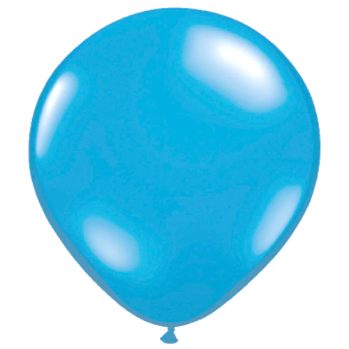

INFLATE ANIMATION


I created the inflate animation by inserting an image and then infinitely scaling it up and down. It begins at 1 scale, increase to 1.5, and then return back to 1 within 3 seconds. I used a picture of a balloon to depict the inflation and deflation process using scaling. I made the animation slow enough to show the increase in size realistically, but quick enough for users to see the image go back to normal. I wanted it to seem like a person was blowing into a balloon and then letting it go, then blowing into it again.